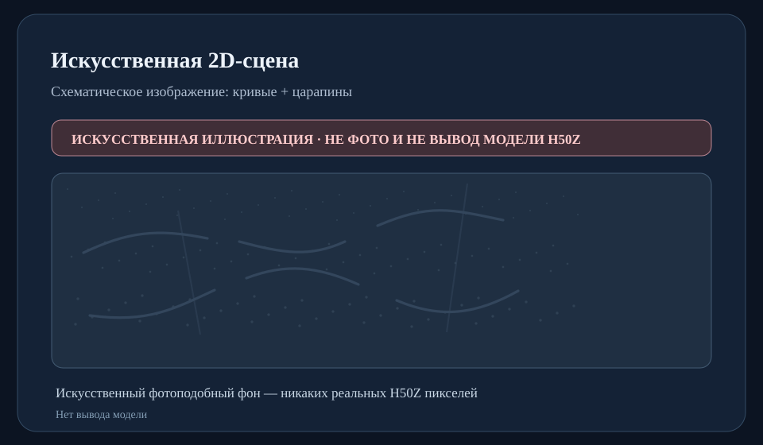
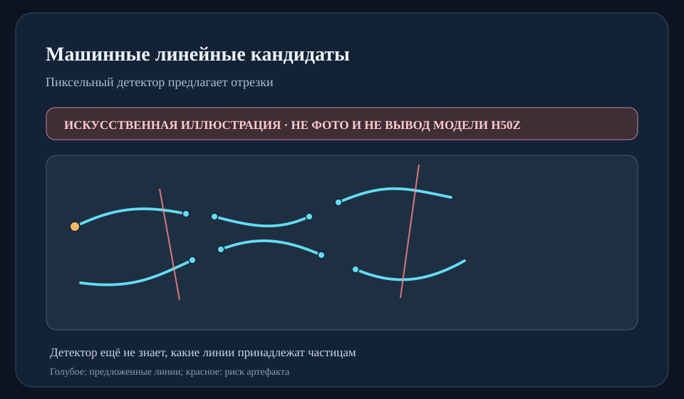
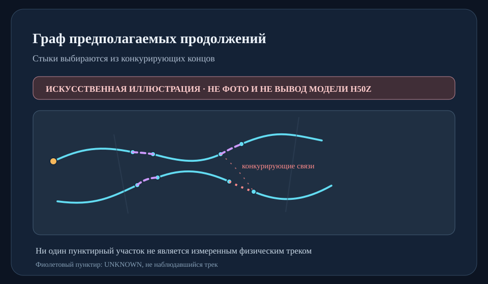
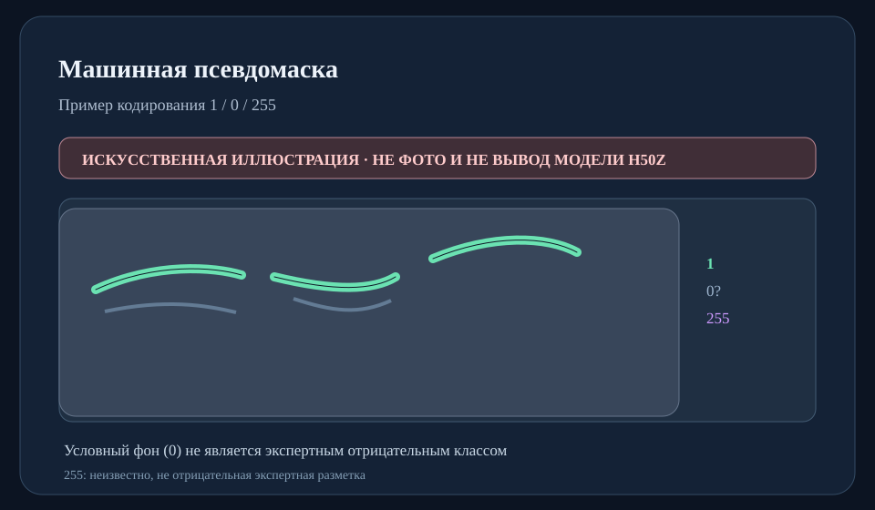

Машинных предложений линий
Не доказанные реальные физические треки
Две исходные H50Z-фотографии одного физического запуска, 39 выбранных участков и отдельные измеренные формы visualMetro другой плёнки.
Не доказанные реальные физические треки
Все имеют статус UNKNOWN
34 пары + одна цепочка из четырёх
Нет реальной precision/recall
127 из 128 пространственно выбранных участков исходных BMP получили хотя бы один машинный линейный кандидат (1166 предложений). Это охват работы детектора, не полнота обнаружения физических частиц.
Переключайте примеры схемы. Аналогичные слои существуют в приватных демонстраторах S39/S57. Здесь не использованы исходные пиксели H50Z.




16 искусственно внесённых траекторий поверх настоящего H50Z-фона; процент точек, найденных в радиусе 3 пикселей. Это не показатель точности на настоящих треках.
| Вариант | Верных стыков | Прочих | Целых цепочек / 192 |
|---|---|---|---|
| S39 | 56 | 52 | 12 |
| CAL-выбранный S72 | 56 | 41 | 13 |
Алгоритм уменьшил число неправильных либо несопоставленных искусственных соединений, не потеряв правильные, но собрал лишь 13 из 192 потенциальных цепочек.
Автоматически создаются машинные предложения линий, 2D-маски и кандидаты связности; возможны пропуски, пересечения, царапины и ложные мостики. Система не знает достоверную идентичность частиц. Эксперты могут проверять уже предложенные пары и фрагменты, не обводя весь архив заново.
Что ещё нельзя заявлять: физическую precision/recall, тип/массу частицы, 3D-траектории, перенос на другую заливку или безопасные автоматические связи. S84 и detector-specific S85 не прошли установленные критерии безопасности.
Научный отчёт и ссылки на исходные эксперименты · Агрегаты и SHA-256 исходников
Источник только: публичные научные агрегаты S27–S85 из этой исследовательской ветки; без raw BMP, visualMetro координат, весов и настоящих приватных скриншотов.